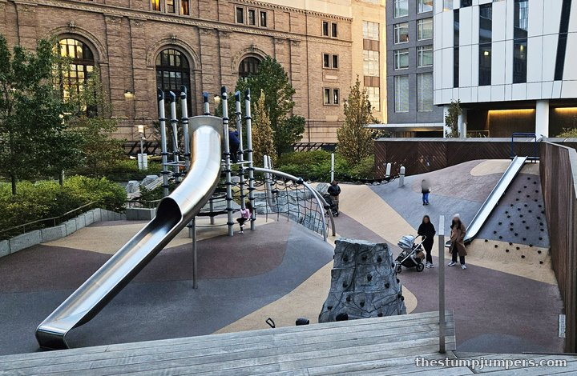
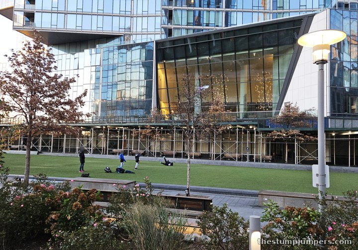

Waterline Square Park: In the Tiny Artificial City
The Stump Report
Stump average: 2.8 out of 5. Ranked #16 of 30 in NYC.

Right next to the old IRT Powerhouse sits one of the newest, cleanest playgrounds in the city. Waterline Square is built on a deck over the Amtrak tracks, on land that used to be a rail yard and then a parking lot.
The whole place feels like a miniature artificial city. The towers around it have a school, a climbing gym, places for dinner and drinks, and even a little street with its own stop signs. The playground is the city's backyard.
It's tiny, but it's fun. There's a very long slide down a steep rubber hill, and another slide that comes off an obstacle course, a lot like the one at Pier 97. The rubber ground is bouncy everywhere, so the kids run up and down the hills just for fun.
There are a few ways in and out, so keep an eye on the mobile ones.

Next door is a big lawn. It's not an athletic field, but the kids play soccer and baseball on it anyway.
The real bonus is the lights. The park is open until 1 a.m. and lit up at night. Most NYC playgrounds, including every one in Central Park and Brooklyn Bridge Park, officially close at dusk, so in the winter a lit playground is a rare thing. Waterline Square joins West End Park on our new Open After Dark list.
Bathrooms are the weak spot. There are no public ones nearby, so you'll be begging your way into a shop or a lobby.
It's known mostly to locals, it's clean, and it's quiet. A real hidden gem.
Playground hoppers, take note: Pier 97 is a few blocks south, and West End Park and Gertrude Ederle Playground are each a short walk away. You can hit all four in one ride.
Verdict: a tiny, spotless designer playground with a great long slide, bouncy rubber everywhere, and, best of all, lights. Short on equipment and bathrooms, but perfect for a winter evening when every other playground has gone dark.
Biking & Running There
By bike: that's how we came, on the Stumpjumper. The Hudson River Greenway runs right past the west end of the park. By train: 1 to 66 St–Lincoln Center, then walk about 10 minutes southwest.
More to Do Nearby
- West End Park about 0.2 mi away · 1.8
- Gertrude Ederle Playground about 0.2 mi away · 2.4
- Pier 97 Playground about 0.3 mi away · 2.6